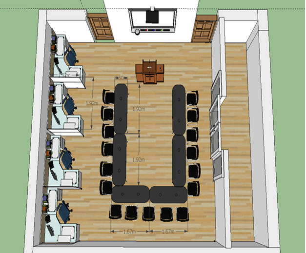
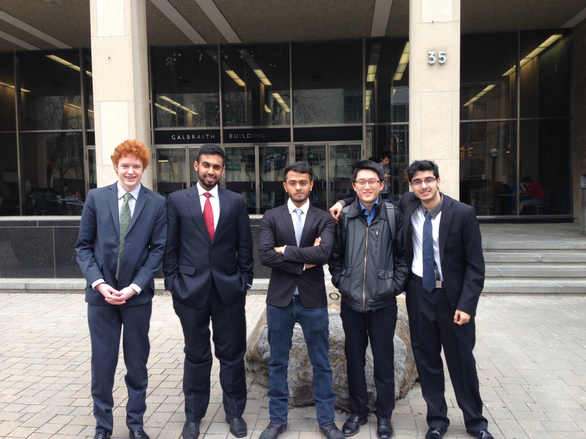

About: This course introduces and provides a framework for the design process, problem solving and project management. Students are introduced to communication as an integral component of engineering practice. The course is a vehicle for understanding problem solving and developing communications skills. Building on the first course, this second course in the two Engineering Strategies and Practice course sequence introduces students to project management and to design problem definition. Students work in teams on a term length design project. Students will write a series of technical reports and give a team based design project presentation.
Engineering Design Process: We first used a functional decomposition to determine the project's main functions. For each function, we came up with a list of solutions. Combining these solutions, we developed a list of 25 complete ideas. To narrow the list, we compared each idea to the project's two most important objectives in an objective comparison graph. The top five ideas were then compared using a weighted decision matrix to help us determine which design to proceed with.
Responsibilities: As team leader, I held many responsibilities. These included arranging meetings outside of the scheduled tutorials, communicating with our client with regards to meetings and project updates, ensuring meetings stay focused and productive, and upholding a positive and effective team dynamic.
Final Presentation Powerpoint: Final Presentation
Final Design Specifications: Final Design Specifications
 About: I taught myself html, css, and javascript using online tutorials and resources. To practice these skills, I decided to create my own personal business website. Upon completing the code, I researched web hosting options and used a free web hosting server to deploy and publish my website on.